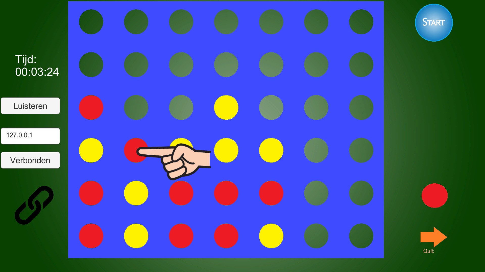

Net Vier Op Een Rij, Net Four In A Row, Vier-Op-Een-Rij & Net Connect 4

Net Vier op een rij : Een Unity / Visual Studio Community 2019 programma beschikbaar vanuit de Microsoft Store, voor 2 spelers op 1 PC of via LAN, kabel of het net!
: Een Unity / Visual Studio Community 2019 programma beschikbaar vanuit de Microsoft Store, voor 2 spelers op 1 PC of via LAN, kabel of het net!
Vier-op-een-rij (zelfde als Net Vier Op Een Rij onder andere naam): Een Unity / Visual Studio Community 2019 programma beschikbaar vanuit de Microsoft Store, voor 2 spelers op 1 PC of via LAN, kabel of het net!

Net Four In A Row: Een Unity / Visual Studio Community 2019 programma beschikbaar vanuit de Microsoft Store, Versie voor 2 spelers, o.a. via internet tegen elkaar spelen!! Engelstalig
Net Connect 4: Een Unity / Visual Studio Community 2019 programma beschikbaar vanuit de Microsoft Store, Versie voor 2 spelers, o.a. via internet tegen elkaar spelen!! Engelstalig
Winning Triumphal Fanfare sound is from soundbible.com big thanks to John Stracke (Attribution 3.0 License)
achterhalen van je IP-address : die geef je door bv via WhatsApp zodat je tegenstander die kan invullen voor Net Memory.NET (IPV4-adres #2) of Vier-Op-Een-Rij (of Net Four In A Row, engelstalig).
Je eigen Lokale ip-adres: je kunt dit vinden door 'ipconfig' in CMD or the command-prompt te typen om in een LAN te verbinden en te spelen.
Spelen in een LAN (Local Area Network) of direct via een UTP-kabel werkt ietwat anders dan spelen op het WAN internet:
Het ip-adres om te verbinden.., dan vul je het volgende in: je kan het verkrijgen door 'ipconfig' in CMD, the command-prompt te typen. Voor dat kan je eerst CMD intypen
in het zoekveld op de Windows 10 taakbalk.
In CMD zoek nauwkeurig naar: 'Wireless LAN adapter Wi-Fi' als je verbonden bent met internet via Wi-Fi.
Het IPV4-adres van je tegenstander op het WAN: Dat kan je b.v. via Whatsapp of telefoon van hem of haar verkrijgen.
Hij/zij kan het krijgen via https://www.ip-adres.nl/
: hij/zij zend het via WhatsApp of phone.
Waarschijnlijk is er ook een MODEM instelling noodzakelijk (port-forwarding op port 1200), zie b.v. voor KPN gebruikers het document : 'opmerkingen voor KPN gebruikers'.
Opmerkingen voor KPN gebruikers.